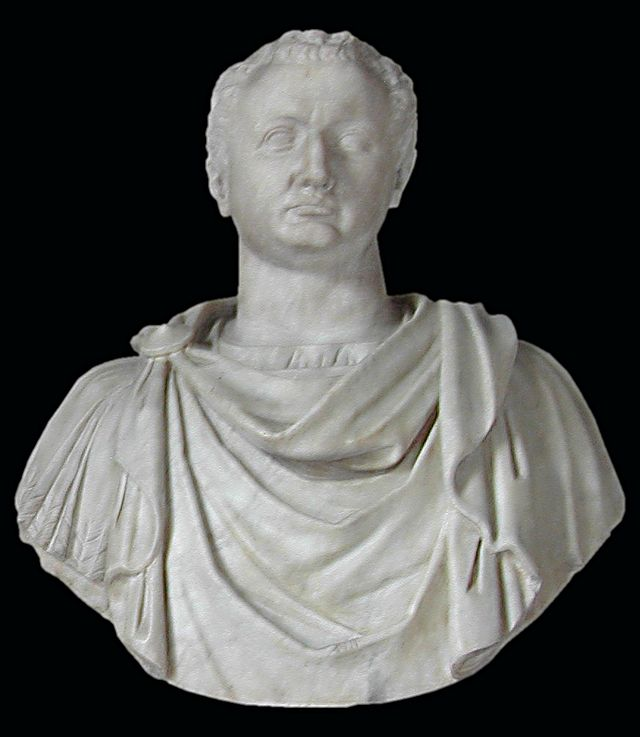

O Império Romano se divide em dois períodos, o Alto Império Romano (27 a.c - 235), no qual houve
seu auge, e
o Baixo Império Romano (284 - 476), onde houve sua decadência e o seu fim. Durante esses
períodos, houveram
diversas dinastias diferentes e nela diversos imperadores romanos. Essa epoca iniciada por
Augusto e seus
sucessores (Dinastia Júlio-Claudiana), depois seguido pelas dinastias Flaviana, Antonina,
Severa. Por fim, no baixo império romano houveram muitplos imperadores caracterizados pela falta
de realizações e reinados de curta duração, chegando ao fim quando o imperador Rômulo Augusto foi
despojado por Odoacro. Confira abaixo as informações de alguns dos imperadores romanos.
Dinastia Júlio-Claudiana
Nome: Caio Júlio César Otaviano Augusto
Epíteto: Imperador Augusto
Reinado: 16 de janeiro de 27 a.C;
a 19 de agosto de 14 d.C.
Idade: Nascimento
23 de setembro de 63 a.C.
Roma, República Romana
Morte
19 de agosto de 14 (75 anos)
Pais: Júlio César (adotivo) e Ácia Balba Cesônia
Antecessor: Júlio Cesar
Sucessor: Tibério
 Nome: Tibério Cláudio César Nero
Epíteto: Imperador Tibério
Reinado: 18 de setembro de 14
a 16 de março de 37
Idade: 16 de novembro de 42 a.C;
16 de março de 37 (77 anos).
Pais: Tibério Cláudio Nero e Lívia Drusa
Antecessor: Augusto
Sucessor: Calígula
Nome: Caio Júlio César Augusto Germânico
Epíteto: Imperador Calígula
Reinado: 18 de março de 37
a 24 de janeiro de 41
Idade: 31 de agosto de 12;
24 de janeiro de 41 (28 anos).
Pais: Germânico e Agripina
Antecessor: Tibério
Sucessor: Cláudio
Nome: Tibério Cláudio César Augusto Germânico
Epíteto: Imperador Cláudio
Reinado: 24 de janeiro de 41
a 13 de outubro de 54
Idade: 1 de agosto de 10 a.C;
13 de outubro de 54 (63 anos).
Pais: Nero Cláudio Druso e Antônia Menor
Antecessor: Caligula
Sucessor: Nero
Nome: Tibério Cláudio César Nero
Epíteto: Imperador Tibério
Reinado: 18 de setembro de 14
a 16 de março de 37
Idade: 16 de novembro de 42 a.C;
16 de março de 37 (77 anos).
Pais: Tibério Cláudio Nero e Lívia Drusa
Antecessor: Augusto
Sucessor: Calígula
Nome: Caio Júlio César Augusto Germânico
Epíteto: Imperador Calígula
Reinado: 18 de março de 37
a 24 de janeiro de 41
Idade: 31 de agosto de 12;
24 de janeiro de 41 (28 anos).
Pais: Germânico e Agripina
Antecessor: Tibério
Sucessor: Cláudio
Nome: Tibério Cláudio César Augusto Germânico
Epíteto: Imperador Cláudio
Reinado: 24 de janeiro de 41
a 13 de outubro de 54
Idade: 1 de agosto de 10 a.C;
13 de outubro de 54 (63 anos).
Pais: Nero Cláudio Druso e Antônia Menor
Antecessor: Caligula
Sucessor: Nero
 Nome: Nero Cláudio César Augusto Germânico
Epíteto: Imperador Nero
Reinado: 13 de outubro de 54
a 9 de junho de 68
Idade: 15 de dezembro de 37;
9 de junho de 68 (30 anos)
Pais: Cláudio (adotivo) e Agripina Menor
Antecessor: Claudio
Sucessor: Galba
Nome: Nero Cláudio César Augusto Germânico
Epíteto: Imperador Nero
Reinado: 13 de outubro de 54
a 9 de junho de 68
Idade: 15 de dezembro de 37;
9 de junho de 68 (30 anos)
Pais: Cláudio (adotivo) e Agripina Menor
Antecessor: Claudio
Sucessor: Galba
Dinastia Flaviana
Nome: César Tito Flávio Vespasiano Augusto
Epíteto: Imperador Vespasiano
Reinado: 1 de julho de 69
a 23 de junho de 79
Idade: 17 de novembro de 9; ;
23 de junho de 79 (69 anos)
Pais: Tito Flávio Sabino e Vespásia Pola
Antecessor: Vitélio
Sucessor: Tito

Nome: Tito Flávio César Vespasiano Augusto
Epíteto: Imperador Tito
Reinado: 23 de junho de 79
a 13 de setembro de 81
Predecessor
Vespasiano
Idade: 30 de dezembro de 39;
13 de setembro de 81 (41 anos).
Pais: Vespasiano e Domitila, a Maior
Antecessor: Vespasiano
Sucessor: Dominiciano
Nome: Tito Flávio Domiciano
Epíteto: Imperador Dominiciano
Reinado: 14 de setembro de 81
a 18 de setembro de 96
Idade: 24 de outubro de 51;
18 de setembro de 96 (44 anos)
Pais: Vespasiano e Domitila, a Maior
Antecessor: Tito
Sucessor: Nerva
Dinastia Antonina
Nome: Marco Coceio Nerva César Augusto
Epíteto: Imperador Nerva
Reinado: 18 de setembro de 96
a 27 de janeiro de 98
Idade: 8 de novembro de 30;
27 de janeiro de 98 (67 anos).
Pais: Marco Coceio Nerva e Sérgia Plaucila
Antecessor: Dominiciano
Sucessor: Trajano
Nome: César Nerva Trajano Augusto
Epíteto: Imperador Trajano
Reinado: 27 de janeiro de 98
a 8 de agosto de 117
Idade: 18 de setembro de 53;
8 de agosto de 117 (63 anos).
Pais: Marco Úlpio Trajano e Márcia
Antecessor: Nerva
Sucessor: Adriano
Nome: César Públio Élio Trajano Adriano Augusto
Epíteto: Imperador Adriano
Reinado: 10 de agosto de 117
a 10 de julho de 138
Idade: 24 de janeiro de 76;
10 de julho de 138 (62 anos).
Pais: Públio Élio Adriano Afer e Domícia Paulina
Antecessor: Trajano
Sucessor: Antonino Pio
Nome: César Tito Élio Adriano Antonino Augusto Pio
Epíteto: Imperador Antonio Pio
Reinado: 11 de julho de 138
a 7 de março de 161
Idade: 19 de setembro de 86;
7 de março de 161 (74 anos).
Pais: Tito Aurélio Fulvo, o Jovem e Árria Fadila
Antecessor: Adriano
Sucessor: Marco Aurélio
.jpg) Nome: Marco Aurelio Antonino Augusto
Epíteto: Imperador Marco Aurelio
Reinado: 8 de março de 161
a 17 de março de 180
Idade: 26 de abril de 121;
17 de março de 180 (58 anos).
Pais: Marco Ânio Vero e Domícia Lucila
Antecessor: Antonino Pio
Sucessor: Cômodo
Nome: Marco Aurelio Antonino Augusto
Epíteto: Imperador Marco Aurelio
Reinado: 8 de março de 161
a 17 de março de 180
Idade: 26 de abril de 121;
17 de março de 180 (58 anos).
Pais: Marco Ânio Vero e Domícia Lucila
Antecessor: Antonino Pio
Sucessor: Cômodo
Dinastia Severa
Nome: Lúcio Septímio Severo
Epíteto: Imperador Septimo Severo
Reinado: 14 de abril de 193
a 4 de fevereiro de 211
Idade: 11 de abril de 145;
4 de fevereiro de 211 (65 anos).
Pais: Públio Septímio Geta e Fulva Pia
Antecessor: Dídio Juliano
Sucessor: Caracala
Nome: Marco Aurélio Severo Alexandre
Epíteto: Imperador Alexandre Severo
Reinado: 13 de março de 222
a 22 de março de 235
Idade: 1 de outubro de 208;
22 de março de 235 (26 anos).
Pais: Marco Júlio Géssio Marciano e Júlia Ávita Mameia
Antecessor: Heliogábalo
Sucessor: Maximino Trácio